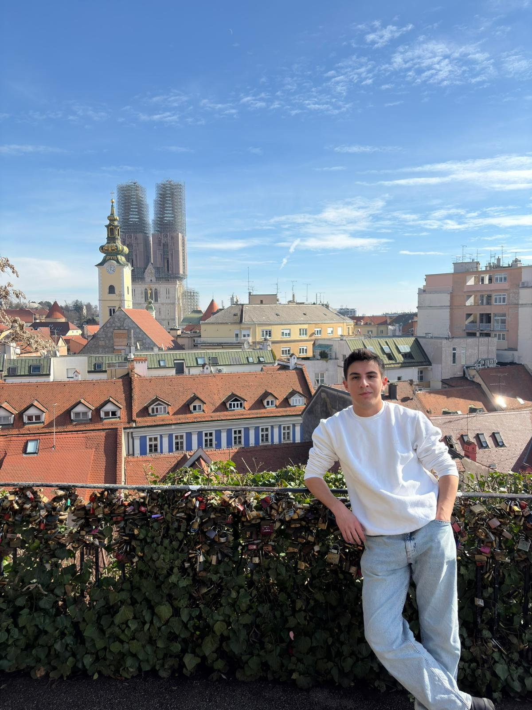
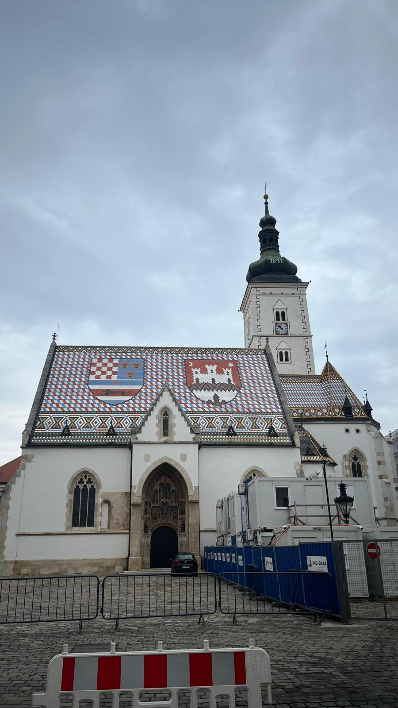
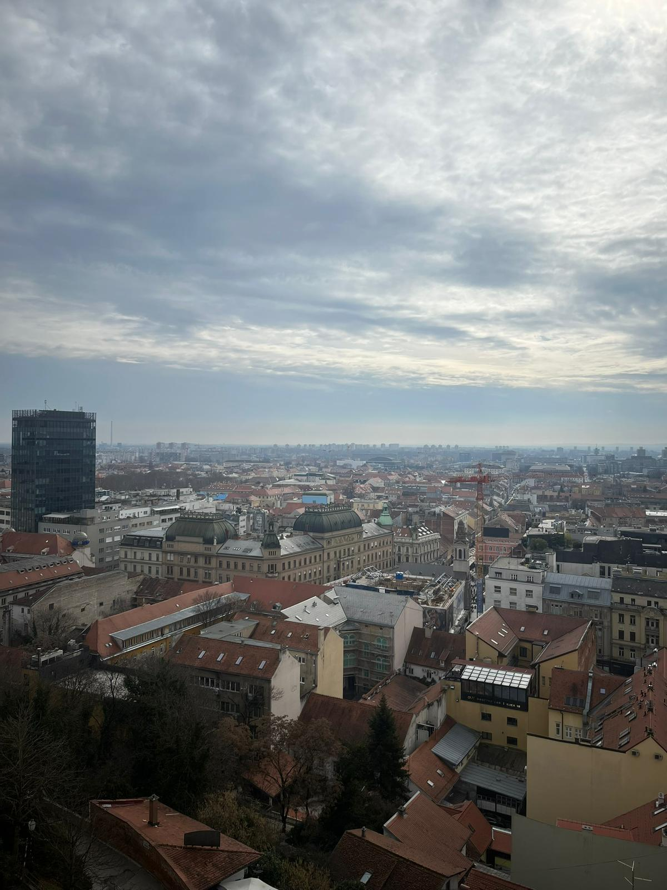
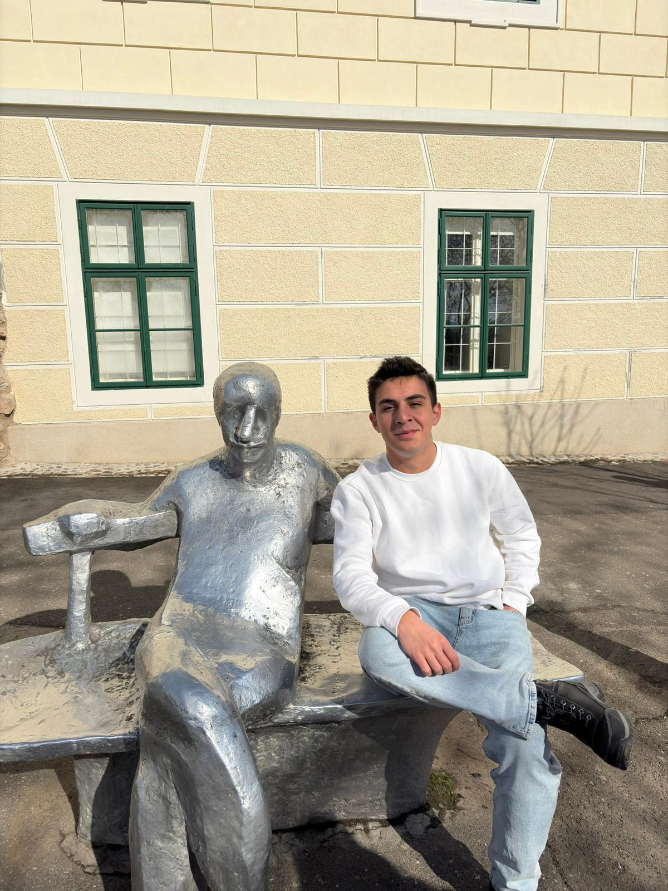

Croatia
Croatia was one of the countries I visited during my Erasmus journey, and the city I explored was its capital, Zagreb. Before visiting, I did not expect much, but I ended up enjoying the city more than I thought I would. The city had wide streets and a peaceful atmosphere that made it really enjoyable to walk around. My favorite place in Zagreb was the Museum of Broken Relationships. It was unlike any museum I had visited before because it was built around such a unique and creative idea. Reading the stories behind the objects on display made the experience both interesting and emotional. Overall, Zagreb exceeded my expectations and left me with a very positive impression of Croatia.
Photo Gallery




Cities Visited
- Zagreb
Favorite Place
Museum of Broken Relationships
My Rating
8/10 ⭐